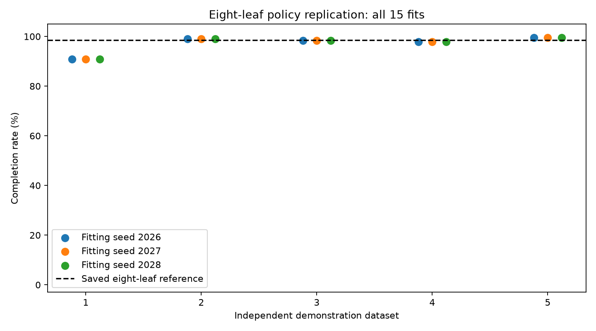

Meet the teacher and student
Compare the neural teacher with the original four-leaf student and follow the student's decision path.
Open the original demo →Can a small decision tree imitate a neural controller reliably? Explore the policies, watch where they fail, and see how their results change with tree size and demonstration data.
The selected eight-leaf tree completed 98.4% of 500 evaluation episodes, compared with 70.8% for the original four-leaf tree. Watch both policies and inspect the decisions behind their actions—including a failure.
Explore the capacity demo →CartPole asks a controller to move a cart left or right to keep a pole upright. The controller observes cart position, cart velocity, pole angle, and angular velocity. Here, an episode is complete when it reaches the 500-step time limit without crossing the cart-position or pole-angle limits.
Built with Python, PyTorch, Gymnasium, scikit-learn, and offline HTML/JavaScript playback. Read the project case study.
| Policy | Mean return | Completion | Failures |
|---|---|---|---|
| Neural teacher | 500.00 | 100% | 0 / 500 |
| Original 4-leaf tree | 485.66 | 70.8% | 146 / 500 |
| Selected 8-leaf tree | 498.84 | 98.4% | 8 / 500 |
The selected tree improved completion by 27.6 percentage points. It still failed eight times, and its worst return was 288, below the original tree's minimum of 336. Higher average performance did not improve every outcome.
The original baseline used a depth cap; the capacity sweep used leaf budgets and a different growth strategy. This is a comparison of the saved policies, not an isolated causal estimate of leaf count. Larger candidates did not improve monotonically. See the full protocol and candidate results.
Compare the neural teacher with the original four-leaf student and follow the student's decision path.
Open the original demo →Adding learner-visited states did not automatically improve this small tree. Explore the aggregation failure and the weighted follow-up.
Across five independently collected datasets from the same teacher, eight-leaf completion ranged from 90.8% to 99.6%, averaging 97.12%. Three fitting seeds gave identical policies within each dataset, so these are five distinct policies, not fifteen independent replications.

These experiments use default CartPole physics and one fixed teacher. They do not establish robustness to altered dynamics, observation noise, or a wider distribution of initial states. Evaluation reset seeds are shared across policies; repeated fits are not independent evaluation samples.
Read the replication study →The teacher and both trees are bundled in artifacts/models. After installing the Python dependencies, run python project.py evaluate all --episodes 100. These demonstrations work offline and replay saved trajectories; they do not run live inference in the browser. The examples illustrate behavior, while the aggregate evaluations above measure performance.
Quick start · Full reproduction · Artifact provenance
Documentation links open Markdown source in a local browser.